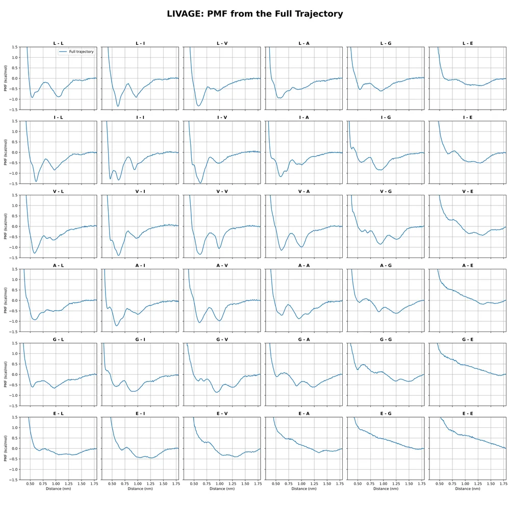
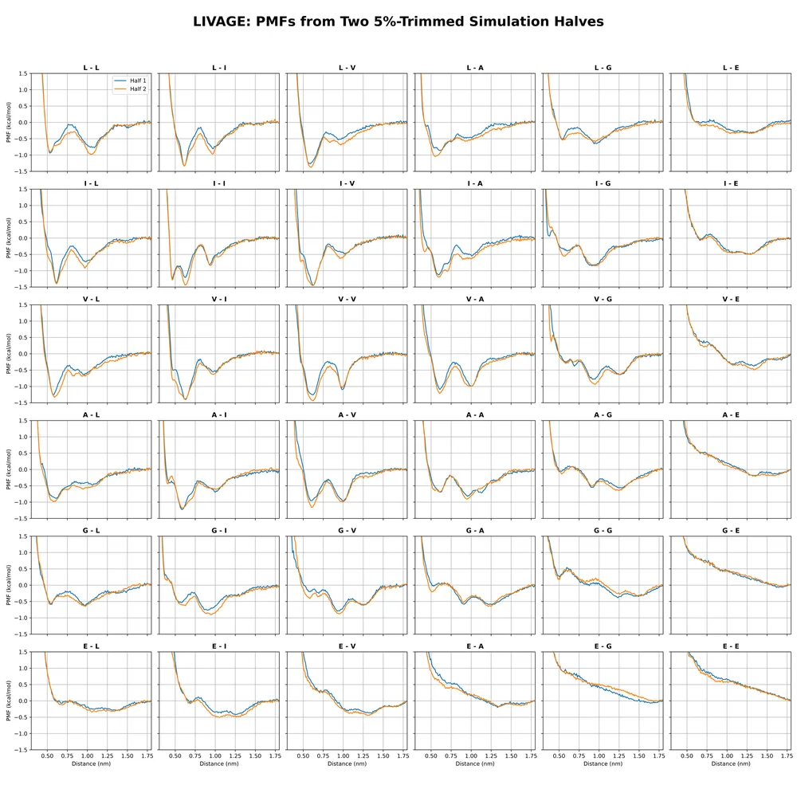
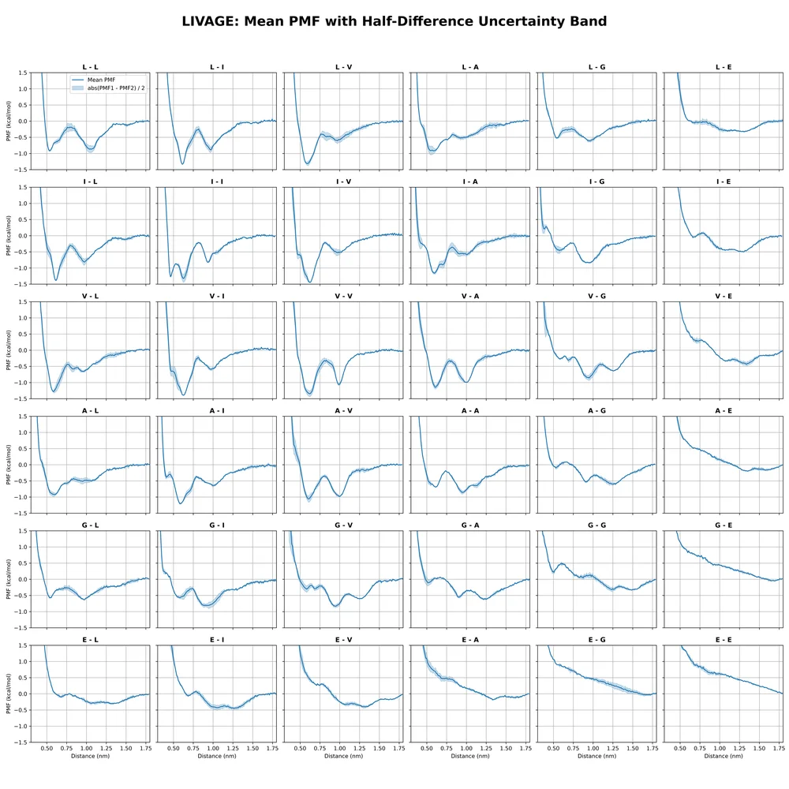
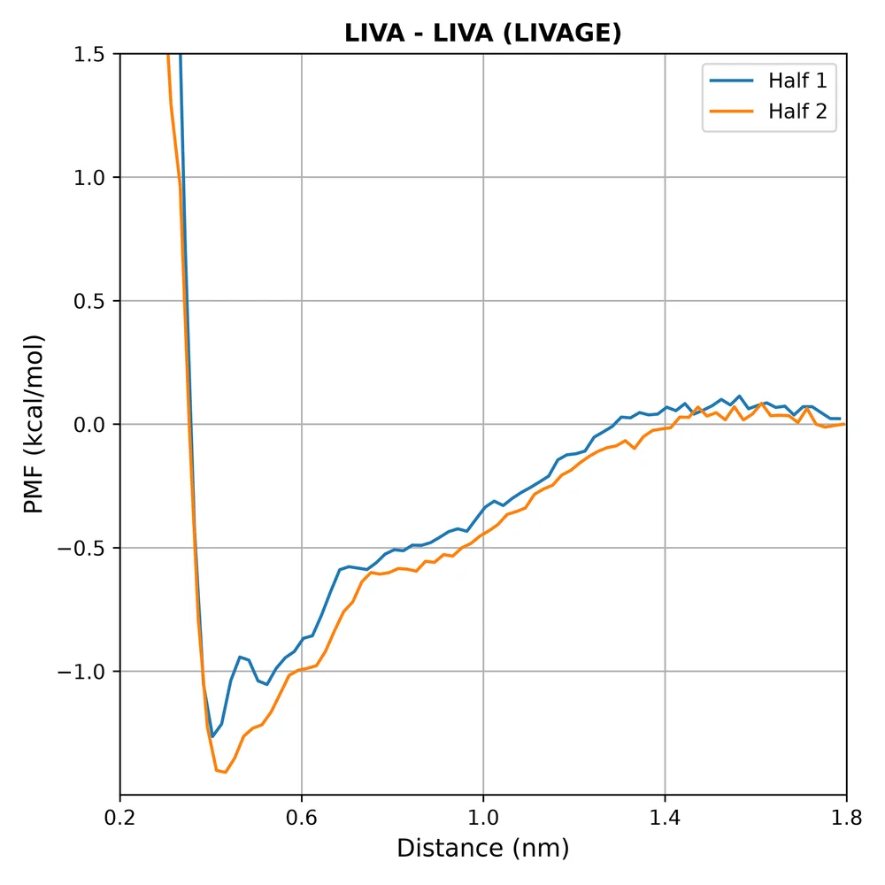
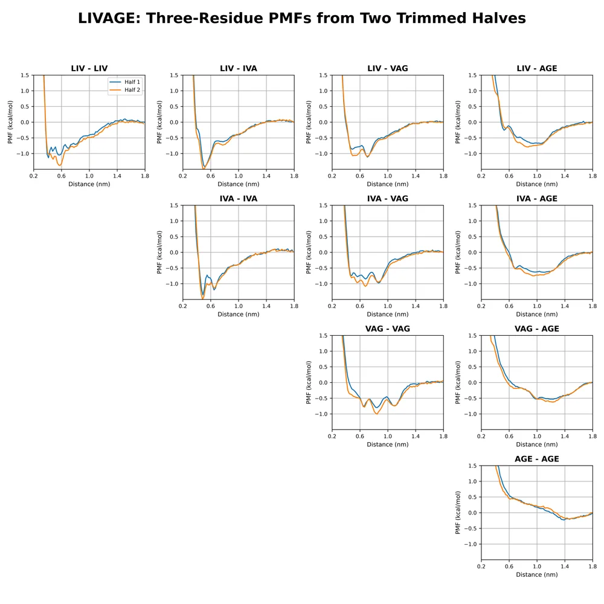
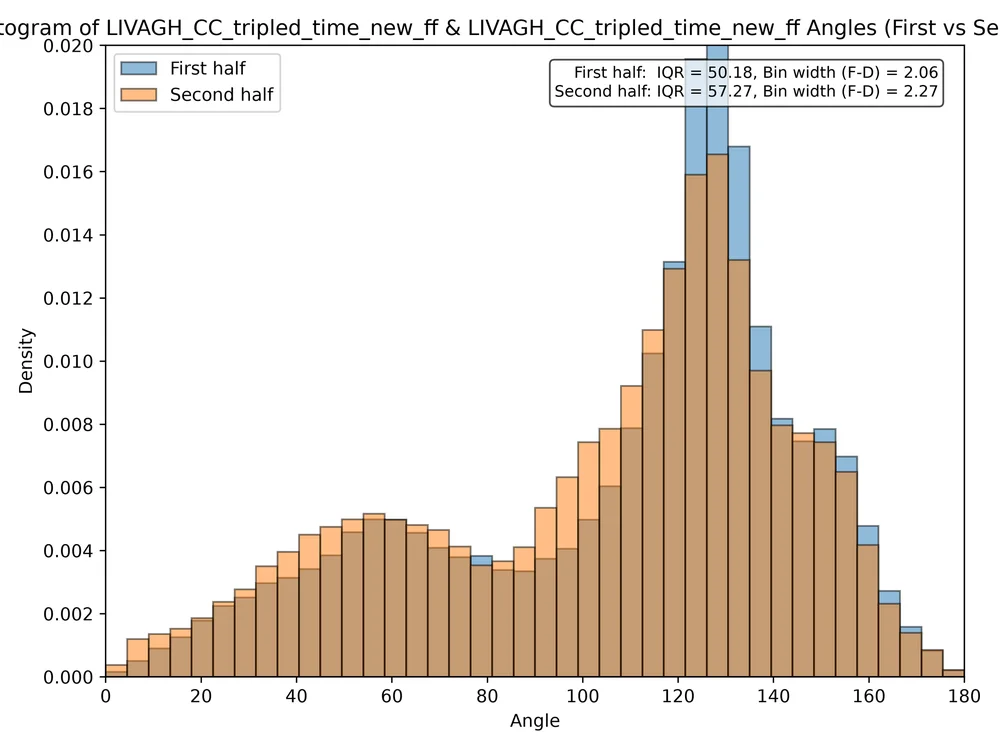
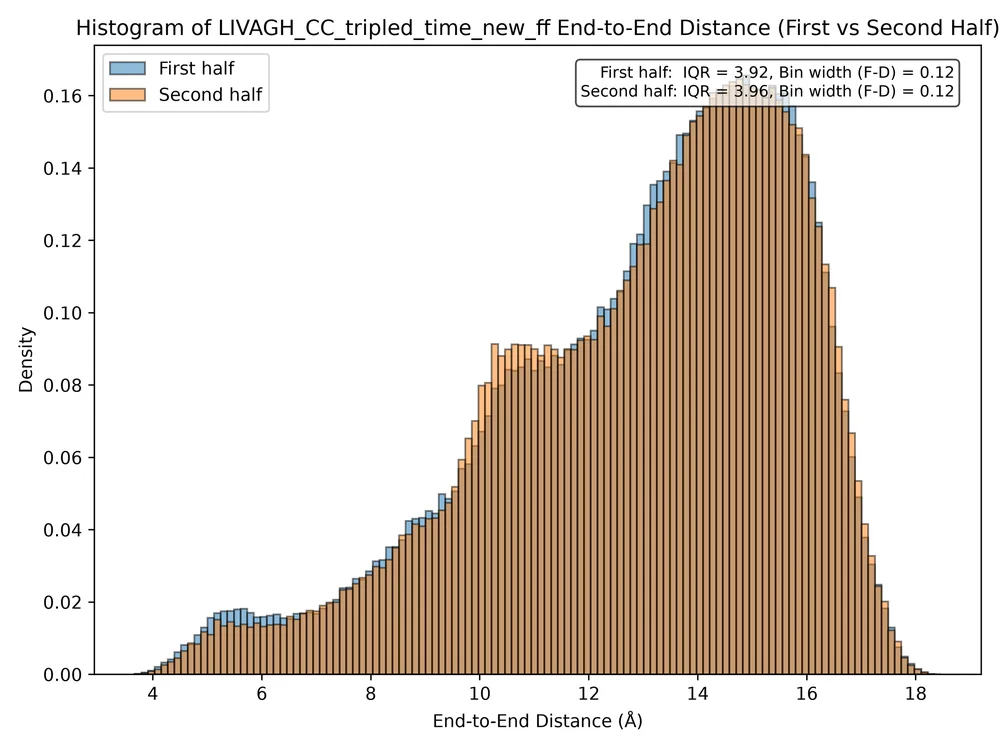
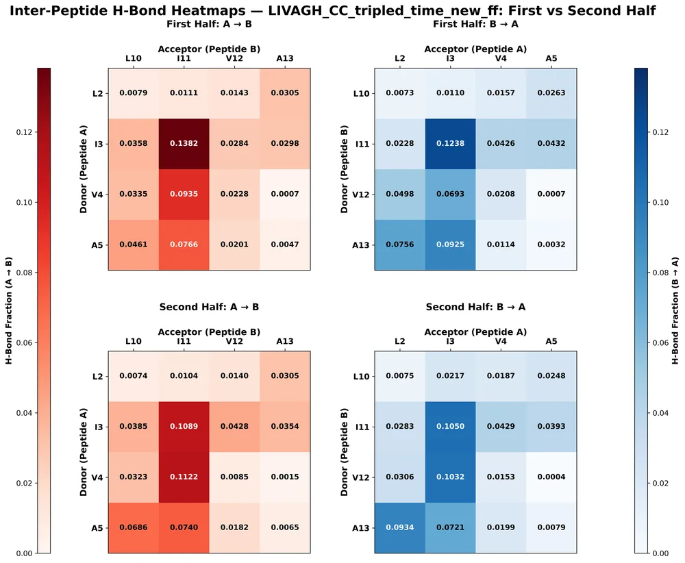
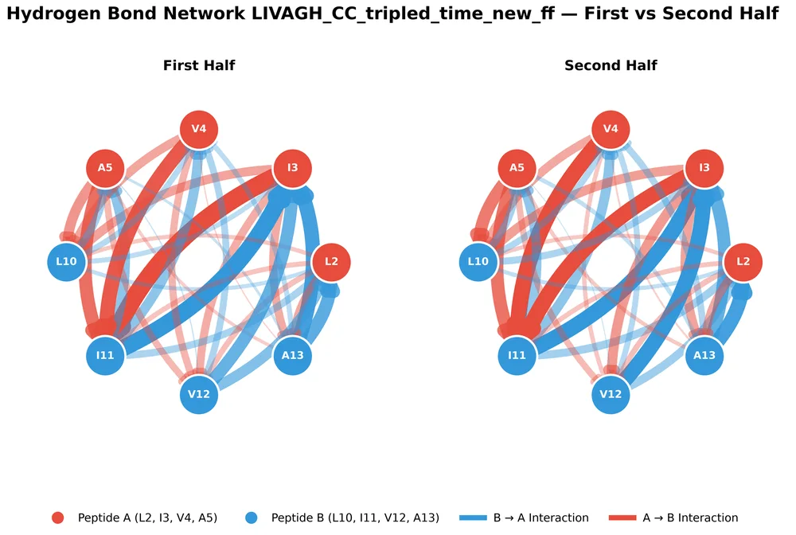

Compare one plot across systems
The original plots of each analysis folder, one page per plot type, all eight systems side by side. Open any image to flip through the systems with ← / →. For overlays on shared axes see Across systems and the interactive explorer.

Pair PMFs, full trajectory (6×6)
36 residue-pair PMFs from the whole (5%-trimmed) trajectory: row = residue on peptide 1, column = residue on peptide 2, 0.01 nm bins, zero at 1.8 nm. The last row and col…
PMF · 8 systems
Pair PMFs, first vs second half (6×6)
Same 36 pair PMFs computed separately from the first and the second half of the trajectory (5% trimmed at the start of each half). Where the two curves overlap the PMF is…
PMF · 8 systems
Pair PMFs, mean of halves with |PMF₁−PMF₂|/2 band (6×6)
Mean of the two half-trajectory PMFs on a common grid; the shaded band is half the absolute difference between the halves. These mean curves are what the well-depth table…
PMF · 8 systems
LIVA–LIVA fragment PMF, both halves
PMF of the distance between the LIVA fragments of the two peptides (residues 2–5 vs 10–13), first vs second half, 0.02 nm bins, zero at 1.8 nm.
PMF · 8 systems
Three-residue window PMFs, both halves
PMFs between three-residue windows (LIV, IVA, VAG, AGX) of the two peptides, first vs second half, 0.02 nm bins. Off-diagonal panels pool both orderings (window i on pept…
PMF · 8 systems
Peptide 1 – peptide 2 angle histogram, first vs second half
Distribution of the angle between the two peptide direction vectors in LIVA-LIVA contact frames (fragment distance < 7 Å), first vs second half.
halved analysis · 8 systems
End-to-end distance histogram (peptide 1), first vs second half
Distribution of the peptide-1 end-to-end distance (Cα of L1 to Cα of X6, :2@CA–:7@CA) over all frames of each half.
halved analysis · 8 systems
Inter-peptide H-bond heatmaps, first vs second half
Fraction of LIVA–LIVA contact frames with each donor → acceptor inter-peptide hydrogen bond, per residue, for residues L, I, V, A of both peptides (2–5, 10–13).
halved analysis · 8 systems
Inter-peptide H-bond network, first vs second half
The same hydrogen bonds drawn as a directed network between the LIVA residues of the two peptides; edge width grows with the occupancy fraction.
halved analysis · 8 systems